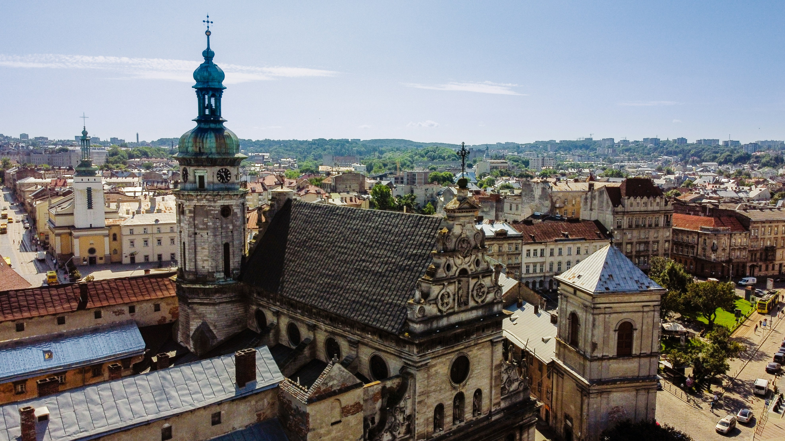

Kyiv
Kyiv is one of the oldest cities in Eastern Europe, founded over 1,400 years ago. It is known for its golden-domed churches and historical architecture. Saint Sophia Cathedral, a UNESCO World Heritage Site, represents medieval architecture, while Kyiv Pechersk Lavra is one of the most important religious centers in Ukraine. The city also combines modern buildings with ancient history, creating a unique skyline.
Read moreLviv

Lviv is known for its well-preserved historic center and European-style architecture. The city features Gothic, Baroque, and Renaissance buildings. Market Square is the heart of the city, surrounded by colorful historic houses. Lviv is also famous for its coffee culture and artistic atmosphere.
Read moreOdesa

Odesa is a major port city on the Black Sea with a rich multicultural history. The city is famous for its Opera House, considered one of the most beautiful in Europe. The Potemkin Stairs are an iconic architectural landmark connecting the city to the port. Odesa’s architecture reflects Italian and French influences.
Read moreKharkiv

Kharkiv is one of Ukraine’s largest cities and a major educational center. It is known for Freedom Square, one of the largest city squares in Europe. The Derzhprom building is a famous example of constructivist architecture. Kharkiv blends Soviet-era design with modern development.
Read moreDnipro

Dnipro is an important industrial and technological center of Ukraine. The city stretches along the Dnipro River, one of the largest rivers in Europe. It played a key role in the Soviet space industry and engineering. Modern bridges and river views define the city’s landscape.
Read more